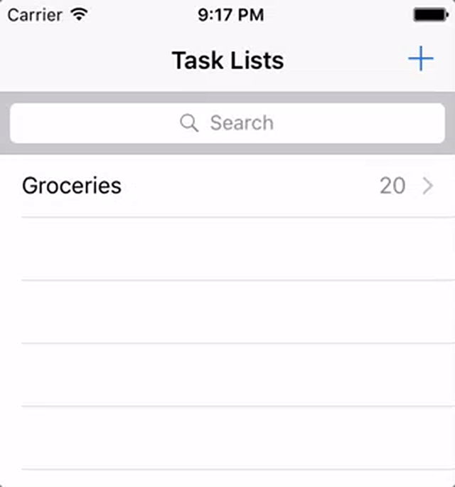

Adding Synchronization
In this lesson you’ll be introduced to Sync Gateway, our secure web gateway. You’ll learn how to use Couchbase Lite’s synchronization APIs, set up Sync Gateway for synchronization with the cloud and other devices, and resolve data conflicts within your application.
TIP: To make things a bit more exciting, you may want to use the pre-built database containing a list of Groceries. Refer to the swift/create-database.adoc lesson to learn how to use it.
Install Sync Gateway
Now that your application runs smoothly on the device you are ready to introduce Sync Gateway. Create a new file called sync-gateway-config.json with the following.
{
"interface": 4984,
"log": ["HTTP", "Auth"],
"databases": {
"todo": {
"server": "walrus:",
"users": {
"GUEST": {"disabled": false, "admin_channels": ["*"] }
}
}
}
}During development, you can set the server property to walrus: (also known as the Walrus mode) and it will keep the data in memory. Note that anytime you restart Sync Gateway in walrus mode, the database will be empty.
By default, Sync Gateway doesn’t allow unauthenticated requests to be processed for security reasons. So you’re enabling the GUEST user which represents all the unauthenticated clients that will be synchronizing with your Sync Gateway instance.
| User authentication is covered in more detail in the swift/adding-security.adoc lesson. |
Sync Gateway is always listening on two ports:
-
4984: the public port which will be used from the application.
-
4985: the admin port used for administrative tasks (for security reasons, it’s only accessible on localhost).
Try it out
-
Unzip the file and locate the executable at bin/sync_gateway (macOS) or run the installer (Windows).
-
Start Sync Gateway from the command-line in your project directory.
sync_gateway sync-gateway-config.jsonPS 'C:\Program Files (x86)\Couchbase\sync_gateway.exe' sync-gateway-config.jsonThe Sync Gateway service might be running on Windows which will prevent this command from succeeding with the message 'FATAL: Failed to start HTTP server on 127.0.0.1:4985: listen tcp 127.0.0.1:4985: bind: Only one usage of each socket address (protocol/network address/port) is normally permitted.' To get around this, stop the 'Couchbase Sync Gateway' service in 'services.msc'.
Add synchronization
Typically, an application needs to send data to the server and receive it. In Couchbase Mobile, this is handled by replications which run on the device. A replication requires a Couchbase Lite database and a Sync Gateway URL, and synchronizes data between the two. They can be of two types:
-
Push: The data is pushed from Couchbase Lite to Sync Gateway.
-
Pull: The data is pulled from Sync Gateway to Couchbase Lite.
There are a few terminologies that designate the role of each database involved in a replications:
-
Source: The database where the data is read.
-
Target: The database where the data is written.
-
Local: The database that resides where the replication is running.
-
Remote: The database to which the replication is sending data.
The following code starts a pull and push replication with progress notifications.
// This code can be found in AppDelegate.swift
// in the startReplication(withUsername:andPassword:)
pusher = database.createPushReplication(kSyncGatewayUrl)
pusher.continuous = true // Runs forever in the background
NotificationCenter.default.addObserver(self, selector: #selector(replicationProgress(notification:)),
name: NSNotification.Name.cblReplicationChange, object: pusher)
puller = database.createPullReplication(kSyncGatewayUrl)
puller.continuous = true // Runs forever in the background
NotificationCenter.default.addObserver(self, selector: #selector(replicationProgress(notification:)),
name: NSNotification.Name.cblReplicationChange, object: puller)
if kLoginFlowEnabled {
let authenticator = CBLAuthenticator.basicAuthenticator(withName: username, password: password!)
pusher.authenticator = authenticator
puller.authenticator = authenticator
}
pusher.start()
puller.start()// This code can be found in CoreApp.cs
// in the StartReplication(string, string) method
var authenticator = default(IAuthenticator);
if(username != null password != null) {
authenticator = AuthenticatorFactory.CreateBasicAuthenticator(username, password);
}
var db = AppWideManager.GetDatabase(username);
var pusher = db.CreatePushReplication(SyncGatewayUrl);
pusher.Continuous = true; // Runs forever in the background
pusher.Authenticator = authenticator;
var puller = db.CreatePullReplication(SyncGatewayUrl);
puller.Continuous = true; // Runs forever in the background
puller.Authenticator = authenticator;
pusher.Start();
puller.Start();
_pusher = pusher;
_puller = puller;// This code can be found in Application.java
// in the startReplication(String, String) method
URL url = null;
try {
url = new URL(mSyncGatewayUrl);
} catch (MalformedURLException e) {
e.printStackTrace();
}
pusher = database.createPushReplication(url);
pusher.setContinuous(true); // Runs forever in the background
puller = database.createPullReplication(url);
puller.setContinuous(true); // Runs forever in the background
if (mLoginFlowEnabled) {
Authenticator authenticator = AuthenticatorFactory.createBasicAuthenticator(username, password);
pusher.setAuthenticator(authenticator);
puller.setAuthenticator(authenticator);
}
pusher.start();
puller.start();Try it out
-
In AppDelegate.swift, set
kSyncGatewayUrlto the URL of the Sync Gateway database (http://localhost:4984/todo/).let kSyncGatewayUrl = URL(string: http://localhost:4984/todo/)! -
Set
kSyncEnabledtotruein AppDelegate.swift.let kSyncEnabled = true -
Build and run.
-
Open http://localhost:4985/_admin/db/todo in the browser and notice that all the documents are pushed to Sync Gateway! You may have more or less rows depending on how many documents are present in the Couchbase Lite database.

-
In CoreApp.cs set
SyncGatewayUrlto the URL of the Sync Gateway database (http://localhost:4984/todo/).private static readonly Uri SyncGatewayUrl = new Uri(http://localhost:4984/todo/); -
In CoreApp.cs in the
CreateHint()method, changeSyncEnabled = falsetoSyncEnabled = true.var retVal = new CoreAppStartHint { LoginEnabled = false, EncryptionEnabled = false, SyncEnabled = true, // Line to change is here UsePrebuiltDB = false, ConflictResolution = false, Username = todo }; return retVal; -
Build and run.
-
Open http://localhost:4985/_admin/db/todo in the browser and notice that all the documents are pushed to Sync Gateway! You may have more or less rows depending on how many documents are present in the Couchbase Lite database.
-
In Application.java, set
mSyncGatewayUrlto the URL of the Sync Gateway database (http://localhost:4984/todo/).private String mSyncGatewayUrl = http://10.0.2.2:4984/todo/;For Android stock emulators, the hostname is
10.0.2.2. -
Set
mSyncEnabledtotruein Application.java.private Boolean mSyncEnabled = true; -
Build and run.
-
Open http://localhost:4985/_admin/db/todo in the browser and notice that all the documents are pushed to Sync Gateway! You may have more or less rows depending on how many documents are present in the Couchbase Lite database.
Resolve Conflicts
Due to the unpredictability of mobile connections it’s inevitable that more than one device will update the same document simultaneously. Couchbase Lite provides features to resolve these conflicts. The resolution rules are written by the developer to keep full control over which revision should be picked. The most common resolution methods are:
-
Deletes always win: if one side deletes a document it will always stay deleted, even if the other side has made changes to it later on.
-
N-way merge: if both sides have updated different properties, the document will end up with the updates from both sides.
-
Last update wins: if both sides have updated the same property, the value will end up as the last one that was updated.
Revisions form a tree data structure and a conflict occurs when there are multiple branches in the revision tree. On the diagram below the conflict is resolved by deleting one branch of the tree (the branch starting at 3-42cc). The other one is the active branch (i.e the winner) where further child revisions can be persisted (4-45cb and 5-42bb).

Detecting conflicts
To resolve conflicts you must first learn how to detect them. The code below uses an All Docs query which is an index of all the documents in the local database. The OnlyConflicts option is passed to report only the documents with conflicts and a LiveQuery is used to continuously monitor the database for changes.
// This code can be found in AppDelegate.swift
// in the startConflictLiveQuery() method
guard kConflictResolution else {
return
}
conflictsLiveQuery = database.createAllDocumentsQuery().asLive()
conflictsLiveQuery!.allDocsMode = .onlyConflicts
conflictsLiveQuery!.addObserver(self, forKeyPath: rows, options: .new, context: nil)
conflictsLiveQuery!.start()The query results are then posted to the application code using the KVO observer method.
// This code can be found in AppDelegate.swift
// in the observeValue(forKeyPath:of:change:context:) method
override func observeValue(forKeyPath keyPath: String?, of object: Any?,
change: [NSKeyValueChangeKey : Any]?, context: UnsafeMutableRawPointer?) {
if object as? NSObject == conflictsLiveQuery {
resolveConflicts()
}
}// This code can be found in CoreApp.cs
// in the StartConflictLiveQuery() method
_conflictsLiveQuery = Database.CreateAllDocumentsQuery().ToLiveQuery();
_conflictsLiveQuery.AllDocsMode = AllDocsMode.OnlyConflicts;
_conflictsLiveQuery.Changed += ResolveConflicts;
_conflictsLiveQuery.Start();// This code can be found in Application.java
// in the startConflictLiveQuery() method
LiveQuery conflictsLiveQuery = database.createAllDocumentsQuery().toLiveQuery();
conflictsLiveQuery.setAllDocsMode(Query.AllDocsMode.ONLY_CONFLICTS);
conflictsLiveQuery.addChangeListener(new LiveQuery.ChangeListener() {
@Override
public void changed(LiveQuery.ChangeEvent event) {
resolveConflicts(event.getRows());
}
});
conflictsLiveQuery.start();The query results are then posted to the application code using the change callback or change listener.
Automatic conflict resolution
Even if the conflict isn’t resolved, Couchbase Lite has to return something. It chooses one of the two conflicting revisions as the winner. The choice is deterministic, which means that every device that is faced with the same conflict will pick the same winner, without having to communicate.
Shown below is a list document created with two conflicting revisions. After deleting the row, the text Text Changed appears which is the name of the second conflicting revision. The action of deleting a document only deletes the current revision and if there are conflicting revisions it will be promoted as the new current revision.
During development, the method saveAllowingConflicts is used to intentionally create a conflict.
You can shake the device (^⌘Z on the simulator) to create a list conflict.
The code is located in the motionEnded(_:with:) method of ListsViewController.swift.
|
Note: During development, the methodSave(bool)is used to intentionally create a conflict. You can press Ctrl+C to create a list conflict. The code is located in theTestConflict()method of TaskListsModel.cs.
iOS Android
Note: During development, the methodsave(boolean)is used to intentionally create a conflict. You can long press the floating action button to create a list conflict. The code is located in thecreateListConflict()method of ListsActivity.java.
This can be surprising at first but it’s the strength of using a distributed database that defers the conflict resolution logic to the application. It’s your responsibility as the developer to ensure conflicts are resolved! Even if you decide to let Couchbase Lite pick the winner you must remove extraneous conflicting revisions to prevent the behaviour observed above. The code below removes all revisions except the current/winning one.
// This code can be found in AppDelegate.swift
// in the resolveConflicts(revisions:withProps:andImage:) method
database.inTransaction {
var i = 0
for rev in revs as! [CBLSavedRevision] {
let newRev = rev.createRevision()
if (i == 0) { // Default winning revision
newRev.userProperties = props
if rev.attachmentNamed(image) != image {
newRev.setAttachmentNamed(image, withContentType: image/jpg,
content: image?.content)
}
} else {
newRev.isDeletion = true
}
do {
try newRev.saveAllowingConflict()
} catch let error as NSError {
NSLog(Cannot resolve conflicts with error: %@, error)
return false
}
i += 1
}
return true
}// This code can be found in CoreApp.cs
// in the ResolveConflicts(SavedRevision[], IDictionarystring, object, Attachment) method
Database.RunInTransaction(() =
{
var i = 0;
foreach(var rev in revs) {
var newRev = rev.CreateRevision();
if(i == 0) { // Default winning revision
newRev.SetUserProperties(props);
if(newRev.GetAttachment(image) != image) {
newRev.SetAttachment(image, image/jpg, image?.Content);
}
} else {
newRev.IsDeletion = true;
}
try {
newRev.Save(true);
} catch(Exception e) {
Debug.WriteLine($Cannot resolve conflicts with error: {e});
return false;
}
i += 1;
}
return true;
});// This code can be found in Application.java
// in the resolveConflicts(ListSavedRevision, MapString, Object, Attachment)
private void resolveConflicts(final ListSavedRevision revs, final MapString, Object desiredProps, final Attachment desiredImage) {
database.runInTransaction(new TransactionalTask() {
@Override
public boolean run() {
int i = 0;
for (SavedRevision rev : revs) {
UnsavedRevision newRev = rev.createRevision(); // Create new revision
if (i == 0) { // That's the current/winning revision
newRev.setUserProperties(desiredProps);
if (desiredImage != null) {
try {
newRev.setAttachment(image, image/jpg, desiredImage.getContent());
} catch (CouchbaseLiteException e) {
e.printStackTrace();
}
}
} else { // That's a conflicting revision, delete it
newRev.setIsDeletion(true);
}
try {
newRev.save(true); // Persist the new revision
} catch (CouchbaseLiteException e) {
e.printStackTrace();
return false;
}
i++;
}
return true;
}
});
}Try it out
-
To enable conflict resolution, set the
kConflictResolutionconstant in AppDelegate.swift totrue.let kConflictResolution = true -
Perform the same actions and this time deleting the list conflict doesn’t reveal the subsequent conflicting revision anymore.

-
To enable conflict resolution, change
ConflictResolution = falsetoConflictResolution = truein theCreateHint()method in CoreApp.cs
return retVal; ```
. Perform the same actions and this time deleting the list conflict doesn`'t reveal the subsequent conflicting revision anymore.
// <block class="wpf"/>
// <img class="center-image" src="https://cl.ly/0o1z380g2w2w/image48w.gif"/>
// <block class="xam"/>
*iOS*
// <img class="portrait" src="./img/image48.gif"/>
*Android*
// <img class="portrait" src="./img/image48xa.gif"/>
// <block class="android"/>
. To enable conflict resolution, set the `mConflictResolution` constant in *Application.java* to ``true``.
+
[source,java]
----
private Boolean mConflictResolution = true;
----
. Perform the same actions and this time deleting the list conflict doesn't reveal the subsequent conflicting revision anymore.
+
// <img class="portrait" src="https://cl.ly/1A0u402Z1t08/image48a.gif"/>
// <block class="all"/>
=== N-way conflict resolution
For task documents, you will follow the same steps as previously except this time the conflict resolution will merge the differences between the conflicting revisions into a new revision before removing them.
This time, one revision changes the title of the task while the other revision marks it as completed.
image:image67.gif[,400]
NOTE: To see the same result, open any list and shake the device (**^⌘Z** on the simulator) to create a task conflict.
The code is located in the `motionEnded(_:with:)` method of **TasksViewController.swift**.
Be sure to disable conflict resolution to see the same result as the animation above.
// <block class="wpf"/>
// <img src="https://cl.ly/451n2X1v1r0z/image67w.gif" class="center-image"/>
[quote]
*Note:* To see the same result, open any list and press Ctrl+C to create a task conflict.
The code is located in the `TestConflict()` method of **TasksModel.cs**.
Be sure to disable conflict resolution to see the same result as the animation above.
// <block class="android"/>
// <img src="https://cl.ly/1E1O0M1l333r/image67a.gif" class="portrait"/>
[quote]
*Note:* To see the same result, open any list and long press the floating action button to create a task conflict.
The code is located in the `createTaskConflict()` method of **TasksFragment.java**.
Be sure to disable conflict resolution to see the same result as the animation above.
// <block class="all"/>
Similarly to the previous section, you will learn how to resolve conflicts, this time for task documents.
In this case, the resolution code will *merge the
changes* (i.e n-way merge) of the conflicting revisions and promote the result as the current revision.
[source]
----
// This code can be found in AppDelegate.swift
// in the resolveConflicts() method
let rows = conflictsLiveQuery?.rows
while let row = rows?.nextRow() {
if let revs = row.conflictingRevisions, revs.count 1 {
let defaultWinning = revs[0]
let type = (defaultWinning[type] as? String) ??
switch type {
// TRAINING: Automatic conflict resolution
case task-list, task-list.user:
let props = defaultWinning.userProperties
let image = defaultWinning.attachmentNamed(image)
resolveConflicts(revisions: revs, withProps: props, andImage: image)
// TRAINING: N-way merge conflict resolution
case task:
let merged = nWayMergeConflicts(revs: revs)
resolveConflicts(revisions: revs, withProps: merged.props, andImage: merged.image)
default:
break
}
}
}
----
// <block class="net"/>
[source,c#]
----
// This code can be found in CoreApp.cs
// in the ResolveConflicts() method
var rows = _conflictsLiveQuery?.Rows;
if(rows == null) {
return;
}
foreach(var row in rows) {
var conflicts = row.GetConflictingRevisions().ToArray();
if(conflicts.Length 1) {
var defaultWinning = conflicts[0];
var type = defaultWinning.GetProperty(type) as string ?? ;
switch(type) {
// TRAINING: Automatic conflict resolution
case task-list:
case task-list.user:
var props = defaultWinning.UserProperties;
var image = defaultWinning.GetAttachment(image);
ResolveConflicts(conflicts, props, image);
break;
// TRAINING: N-way merge conflict resolution
case task:
var merged = NWayMergeConflicts(conflicts);
ResolveConflicts(conflicts, merged.Item1, merged.Item2);
break;
default:
break;
}
}
}
----
// <block class="android"/>
[source,java]
----
// This code can be found in Application.java
// in the resolveConflicts(QueryEnumerator) method
for (QueryRow row : rows) {
ListSavedRevision revs = row.getConflictingRevisions();
if (revs.size() 1) {
SavedRevision defaultWinning = revs.get(0);
String type = (String) defaultWinning.getProperty(type);
switch (type) {
// TRAINING: Automatic conflict resolution
case task-list:
case task-list.user:
MapString, Object props = defaultWinning.getUserProperties();
Attachment image = defaultWinning.getAttachment(image);
resolveConflicts(revs, props, image);
break;
// TRAINING: N-way merge conflict resolution
case task:
ListObject mergedPropsAndImage = nWayMergeConflicts(revs);
resolveConflicts(revs, (MapString, Object) mergedPropsAndImage.get(0), (Attachment) mergedPropsAndImage.get(1));
break;
}
}
}
----
Notice that for 'task' documents, the `nWayMergeConflicts()` method is called to merge the differences of conflicting revisions.
The body of this method is too long to copy here but you can find it in the same file.
==== Try it out
. Enable conflict resolution.
+
[source]
----
let kConflictResolution = true
----
. Build and run.
. Create a task conflict using the shake gesture (or **^⌘Z**) and this time the row contains the updated text *and* is marked as completed.
+
image:image03.png[,400]
// <block class="wpf"/>
. Enable conflict resolution
```c# var retVal = new CoreAppStartHint { LoginEnabled = false, EncryptionEnabled = false, SyncEnabled = false, UsePrebuiltDB = false, ConflictResolution = true, // The line to change Username = todo };
return retVal; ```
. Build and run
. Create a conflict by pressing 'Ctrl+C' and this time the row contains the updated text *and* is marked as completed.
+
image::img/image03w.png[]
// <block class="xam"/>
. Enable conflict resolution
```c# var retVal = new CoreAppStartHint { LoginEnabled = false, EncryptionEnabled = false, SyncEnabled = false, UsePrebuiltDB = false, ConflictResolution = true, // The line to change Username = todo };
return retVal; ```
. Build and run
. Create a task conflict using the shake gesture and this time the row contains the updated text *and* is marked as completed.
*iOS*image:img/image03.png[]**Android**
// <block class="android"/>
. Enable conflict resolution in **Application.java**.
+
[source,java]
----
private Boolean mConflictResolution = true;
----
. Build and run.
. Create a task conflict using the shake gesture and this time the row contains the updated text *and* is marked as completed.
+
// <image src="img/image03a.png" class="portrait"/>
// <block class="all"/>
== Conclusion
Well done! You've completed this lesson on enabling synchronization, detecting and resolving conflicts.
In the next lesson you'll learn how to implement authentication and define access control rules in the Sync Function.
Feel free to share your feedback, findings or ask any questions on the forums.